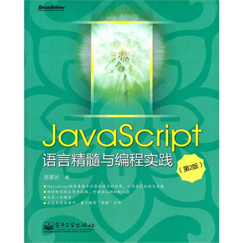

《JavaScript语言精髓与编程实践》已经陆续在网店开售，相关信息可以看这里：
绿皮书再版！ECMAScript 5th有讲呵！
主要的修改与更新的内容在这里：
《JavaScript语言精髓与编程实践》第二版的主要修改
在书中使用到了新版（在开发中的）的QoBean，这个项目是Qomo的一个子项目，所以它随着Qomo发布。在这里：
qomo - Qomolangma OpenProject
http://code.google.com/p/qomo/
下载（注意提供了一个本书专门的下载）：
这本书有三个官方发布的电子文档，分别是：
第一版公开预读章节，包括序、前言、第一章、第四章（部分）和第七章（部分）；
第二版公开预读章节，包括序、前言、第一、二章；
InfoQ发布的迷你电子书《动态函数式语言精髓》，包括第三、四、五章的主要内容。
下载：
http://cid-f9303c43d5ceafb3.skydrive.live.com/browse.aspx/.Public 位于“About - JavaScript语言精髓与编程实践”目录
或尝试如下位置：
又，本书中所提及的Qomo项目将在近期更新，QoBean v1.0将随Qomo V2.final发布。目前，本书《JavaScript 语言精髓与编程实践》的读者可以下载QoBean v0.9_Beta2来参考阅读和测试。在语言特性上，QoBean是Qomo的一个完整实现。下载地址参见上述。
欢迎光临我的微博：http://weibo.com/aimingoo
随便给joy也做个广告，呵呵(^^.)：http://weibo.com/joyaiming
_